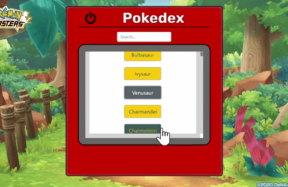

Pokedex
Overview
This application lets the user's look through a list of pokemon. If they would like more detail, they can click the name to find out more about each pokemon.
Purpose & Context
Pokedex is a personal project I built as part of my web development course at CareerFoundry. It demonstrates my ability to build a client-side application that can communicate with an external API. It utilizes HTML, CSS, and JavaScript to allow users to view details of selected pokemon.
User Stories:As a user, I want to be able to view a list of data and see more details for a given data item on demand

Objective
To build a small web application with HTML, CSS, and JavaScript that loads data from an external API and enables the viewing of data points in detail.
Approach
Technologies: JavaScript, CSS, HTML
- Set up the basic outline for the webpage using HTML
- Made complex data of a couple pokemon to build the layout
- Implemented a forEach loop to print details on each pokemon
- Wrap respository in an IIFE to avoid accidentally accessing the global state
- Rendered static data from my data repository on the page
- Added basic styling
- Made the application accessible
- Loaded data from an external API via fetch
- Used Bootstrap to make the styling more clean and usable
- Added a loading indicator, search, and powerdown features
- Tested app to make sure it works added ESLint

Challenges
A challenging part of this project was to stay consistent with the theme of a handheld device. Making sure every new feature that was added works on the handheld screen. Everything had to fit in the screen and make the container look as close to the show’s pokedex as possible.
There are a couple items I would change and add in the next iteration. I want to change the power off button from a window alert into a modal dialog that stays in the pokedex screen. I want to change the background into an image that looks like someone is holding the pokedex in the air, so the background would look like it is outside. It would also be nice for the user to be able to filter the results, like only see 1st evolution or specific type of pokemon.
Duration
This web app took about 6 weeks to complete, working part time.
Credits
Role: Lead developer
Tutor: Andrew Muscara
Mentor: Alexis Gormley
Pokedex is a personal project I built as part of my web development course at CareerFoundry. It demonstrates my ability to build a client-side application that can communicate with an external API. It utilizes HTML, CSS, and JavaScript to allow users to view details of selected pokemon.
This web app took about 6 weeks to complete, working part time. My role was the front-end developer with guidance from my tutor and mentor.
Following the minimum viable product, or MVP, I started by setting up the basic outline of the webpage using html. I then created the js and css files to link them all to the html file. With this set up I can then move on to building each feature.
This app pulls data from an external API. Since I want to check each feature one at a time, I made complex data of pokemon, using JavaScript arrays and objects that can be displayed.
To display the pokemon I used forEach loop so only one function had to be written. Making this function work with the objects I wrote in the previous step, makes sure the function by itself is working, before adding something new.
At this step I came up with the concept for the layout. I wanted the app to look like the pokedex from the cartoon. So a red container that holds a screen where the pokemon information will be pulled up. Adding the style with css. Getting the modal to open just within the confines of the screen was the most challenging part of this step.
As a developer, I understand how important it is for applications to load quickly. That is why I went with an external API. There was one already built, and using that means my code doesn’t have to include more than it needs. To pull the pokemon details, I used AJAX, promises, JSON, HTTP Methods and status codes, and Polyfills. I used Polyfills, because not all browsers can utilize fetch and promises. This ensures the app will look good on any browser, while also keeping the code as small as possible.
I wanted the user to be able to click on a pokemon to get more details, and not see the details until that point; a modal worked for this purpose. The biggest challenge completing this was to get the modal to open just on the “pokedex screen”, and remove the overlay. I used css to achieve the right sizing. I still wanted to continue to get the device to look like the cartoon, so I used the same details the pokedex had in the cartoon.
With more of the app features completed I went back to styling. I added bootstrap instead of another UI framework, due to it being one of the biggest frameworks and commonly used. I checked the app for a cohesive look. So I could then move on to testing on different browsers.
The goal of testing on other browsers is to make sure it will look how it should no matter how the user accesses the app. Once it was checked, I had to go back to the css to fix any discrepancies.
Once the basic app was working and looked how I wanted, I decided to add a couple more features. I wanted the user to be able to search for a particular pokemon, instead of scrolling through all the pokemon. I also added a loading screen so the user knows the app is working while the information is being fetched from the API. To keep the handheld theme, a power on/off switch was added. The power button puts an overlay on the screen to make it seem like it turned off to give it that handheld device feel. The last features to be added were a background image from the cartoon show, a "flying" pokemon, and the pokedex moving up like you are wanting to search the pokemon you just saw.
A challenging part of this project was to stay consistent with the theme. Making sure every new feature added works on the handheld screen. Everything had to fit in the screen and make the container look as close to the show’s pokedex as possible.
There are a couple items I would change and add in the next iteration. I want to change the power off button from a window alert into a modal dialog that stays in the pokedex screen. I want to change the background into an image that looks like someone is holding the pokedex in the air, so the background would look like it is outside. It would also be nice for the user to be able to filter the results, like only see 1st evolution or specific type of pokemon.